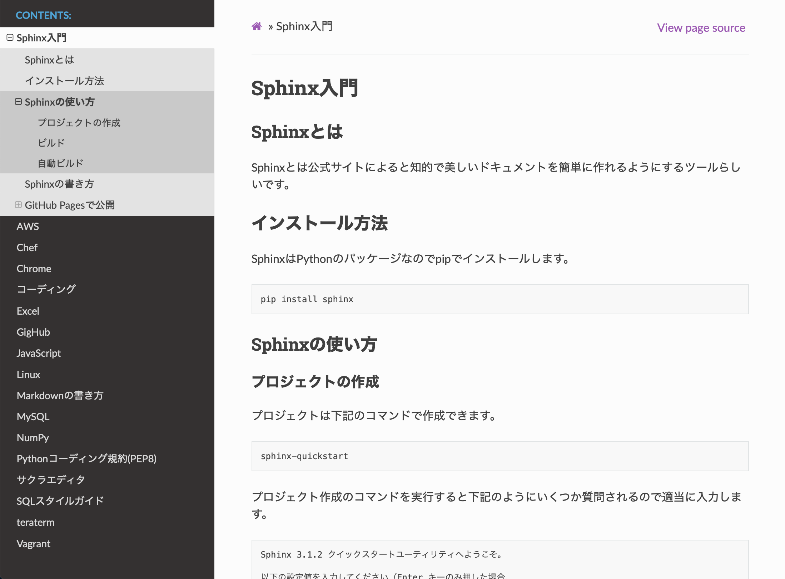

Sphinx入門¶
Sphinxとは¶
Sphinxとは公式サイトによると知的で美しいドキュメントを簡単に作れるようにするツールらしいです。 デフォルトはreStructuredTextという軽量マークアップ言語でドキュメントを書きますが、Markdown用のライブラリをインストールすることでMarkdownも利用できるようになります。 下のキャプチャは実際にSphinxで作成したドキュメントになります。
プロジェクトの作成¶
プロジェクトは下記のコマンドで作成できます。
sphinx-quickstart
プロジェクト作成のコマンドを実行すると下記のようにいくつか質問されるので適当に入力します。
Sphinx 3.1.2 クイックスタートユーティリティへようこそ。
以下の設定値を入力してください（Enter キーのみ押した場合、
かっこで囲まれた値をデフォルト値として受け入れます）。
選択されたルートパス: .
Sphinx 出力用のビルドディレクトリを配置する方法は2つあります。
ルートパス内にある "_build" ディレクトリを使うか、
ルートパス内に "source" と "build" ディレクトリを分ける方法です。
> ソースディレクトリとビルドディレクトリを分ける（y / n） [n]: y
プロジェクト名は、ビルドされたドキュメントのいくつかの場所にあります。
> プロジェクト名: memorandum
> 著者名（複数可）: shirox64
> プロジェクトのリリース []: 1.0.0
ドキュメントを英語以外の言語で書く場合は、
言語コードで言語を選択できます。Sphinx は生成したテキストをその言語に翻訳します。
サポートされているコードのリストについては、
https://www.sphinx-doc.org/en/master/usage/configuration.html#confval-language を参照してください。
> プロジェクトの言語 [en]: ja
プロジェクトは下記のような構造で作成されます。ドキュメントはsourceディレクトリ内で作成します。
.
├── Makefile
├── build
├── make.bat
└── source
├── _static
├── _templates
├── conf.py
└── index.rst
テーマ¶
Sphinxのテーマは豊富にあります。下記のサイトから好きなデザインを見つけて作成できます。